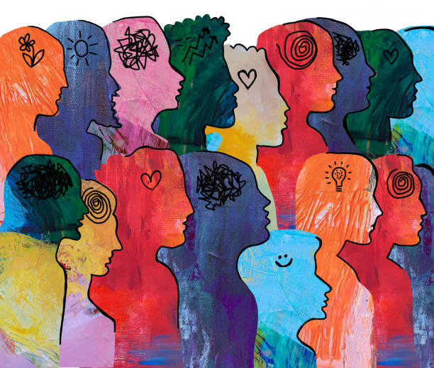
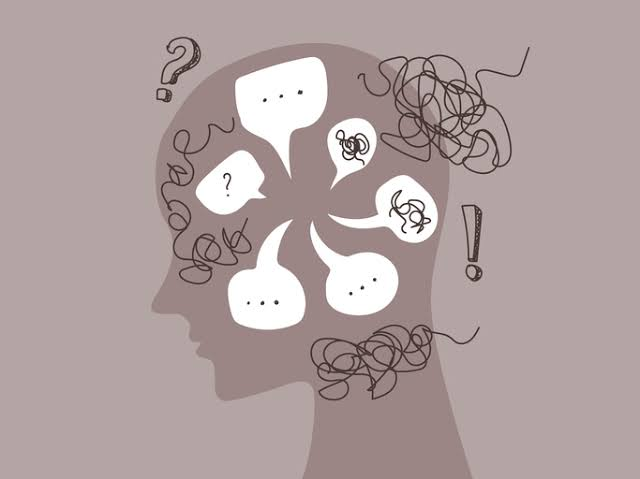
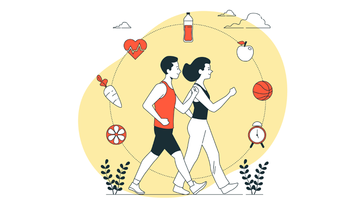

La salud mental y física están profundamente conectadas, ambas determinan el bienestar integral de una persona. La salud mental es un estado de equilibrio emocional, psicológico, social y físico que permite gestionar las emociones, enfrentar el estrés cotidiano, trabajar de forma productiva y contribuir a la comunidad
La salud mental es más que la ausencia de trastornos mentales. Las afecciones de salud mental incluyen trastornos mentales, discapacidades psicosociales y otros estados asociados con angustia, discapacidad funcional o riesgo de autolesión.
El estrés es una respuesta natural del organismo ante situaciones que representan una amenaza. Es una forma en la que el cuerpo se prepara para reaccionar.
Cuando aparece, se activa un sistema interno que involucra al cerebro y a las glándulas suprarrenales, lo que lleva a la liberación de hormonas como el cortisol. Esta hormona ayuda al cuerpo a responder, regulando funciones como la energía disponible, la presión arterial y otros procesos importantes.


Un estilo de vida saludable se basa en mantener una alimentación equilibrada, realizar actividad física regular y asegurar un descanso adecuado
Pilares de los hábitos saludables
• Alimentación equilibrada: Consume al menos 5 porciones diarias de frutas y verduras, y limita el consumo de azúcares, grasas trans y alimentos ultraprocesados.
• Actividad física: Realiza al menos 150 minutos de ejercicio moderado a la semana, como caminar a paso firme, nadar o bailar.
• Higiene del sueño: Duerme entre 7 y 8 horas cada noche manteniendo un horario constante para acostarte y despertarte.
• Hidratación: Bebe suficiente agua natural a lo largo del día (alrededor de 2 litros o 8 vasos).
• Evitar hábitos nocivos: No fumes, modera o evita el consumo de alcohol y reduce el tiempo excesivo frente a las pantallas.
Elige una opción: